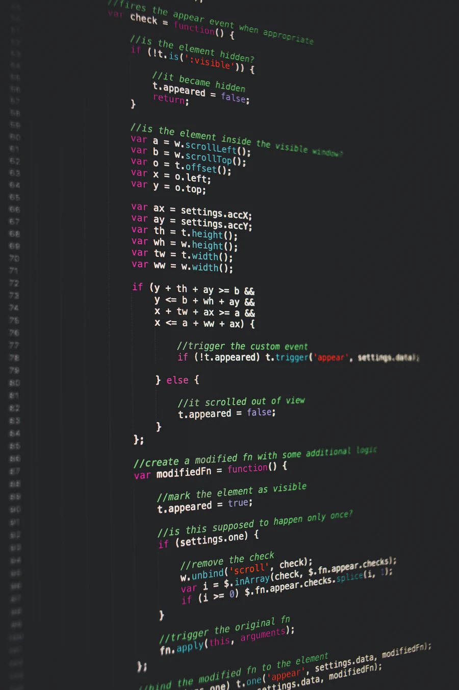

All About Software Engineering
→ Welcome Everyone!!! Here You'll find more information on software Engineering and why it's so in demand today
Training/Education
Software Engineering requires at least Bachelor's Degree. The training focuses more on the different languages and code-experience is an advantage to its training. The following languages can help an individual gain advantage and further in this field is language languages such as Java, JavaScript, Python, SQL,C,C+,C++,PHP. Overall these are the languages used by other Software Engineers and are typically expected to be known by other software Engineers. Working towards certification that focus on these primary languages will help further in this career. Mainly academically Bachelor's Degree is expected, but more training is required to cultivate skills and learn more about Software Development.
more on certification click here
Job Description
Many of you are probably unfamiliar about Software engineering, but many of you probably know more than others about Software Engineering/Development. Just like Web Development, Software Engineering focuses on certain Software and its development. And in development you all probably know that in order to develop something you need to know how the code works, what are the different ways in which the code can be manipulated and exercised in order to provide the best possible results, and build a more reliable software, just like a more functioning/reliable website.
Ensuring that a certain software runs smoothly is one of the responsibilities as a Software Engineer. So maintaining and developing are very important skills that are required for a knowledge of knowing a software better. For the Software engineering in particularly it can be any software that runs by a certain computer language, that can be JAVA, Python,PHP,C,C++.
Any of these languages are what makes certain software possible. It's the engine that runs the system. And this engine must be used or and build upon in order to create a stronger and more reliable software, a more flexible as well. In order for this system/software to function properly it's Software Engineer's responsibility to ensure it all.
analyze, evaluate, design, and test
the performance of the software. It can be in the front line or more in the back of the software development. But overall is making sue the software is reliable and can work flawlessly in order to provide best possible performance to the customers. otherwise it's needs a revision and test to figure out the error that makes it difficult to function. So it's al of these factors that must be taken into consideration as a Software Developer/Engineer.
Knowledge/Skills
Knowledge and skills set is an important parts of Software Engineering. Just like in any other job field, knowing how the code works can help one understand the weaknesses and the strengths of the software. If one knows the computer language well, and how data can be manipulated it will only be easier for the operator to makes changes and fix the error in the system. Software Engineering requires much attention to the detail, but more importantly to the changes in the code. Because the data can be sensitive and have different functions, it's important to understand those function well in order to diagnose the issues in the software.
These are some of the following or/and recommended skills for a Software Engineer:
- Flexility to adjust and adapt in the learning process
- Proficient with Computer Programing/Languages
- Proficient Communicator/Collaborator
- Strong Analytical Mind
Salary/Benefits
Salary and benefits are very rewarding for Software Developers. Approximately it has been recorded that the middle salary or median wage is roughly between a $100,000 and a little above that. With that it has shown to increase with years coming after, and in the future it's projected to growth even faster. Essentially as you can salary is very rewarding, especially in manufacturing and management industries. Indeed this is only an approximate median salary. Certainly with additional training and experience there is an increase.

References
“Home : Occupational Outlook Handbook.” U.S. Bureau of Labor Statistics, U.S. Bureau of Labor Statistics, 2 Dec. 2020, www.bls.gov/ooh/.
- © Untitled
- Design: HTML5 UP